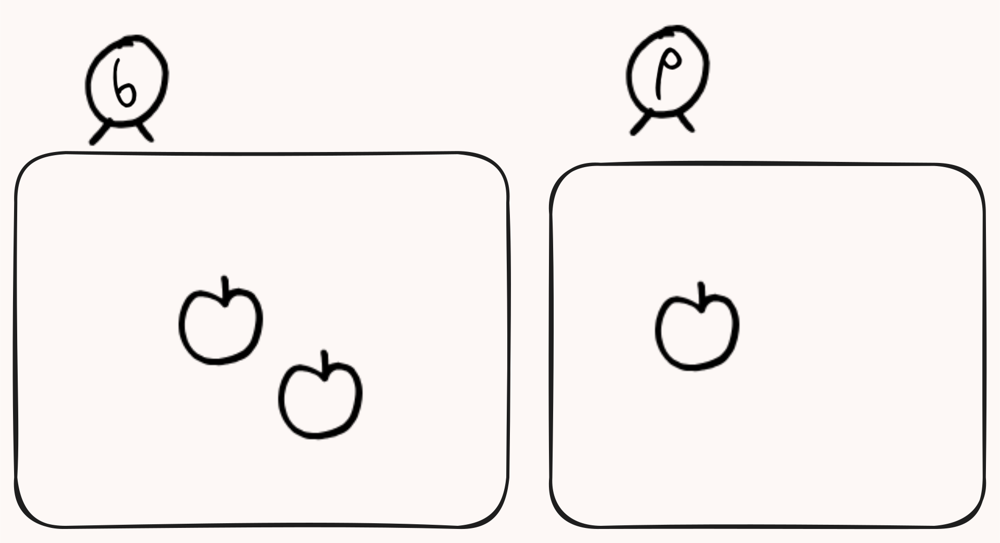

Mathematics in toki pona
The language toki pona lacks a lot of common mathematical definitions.
始めます
In toki pona we have the general notion of numbers as defined in “nasin nanpa pona”. I will go through the core ideas of this number system later, it is very simple. There is no need to reinvent the wheel though, I will use the normal, extremely common, ascii symbols with which we refer to common mathematical symbols.
- Hindu-Arabic numeral system.
- operators (e.g., addition, multiplication, etc.)
- notation (e.g., equality, exponentiation, etc.)
My justification for this is the fact that I believe Mathematics has its own culture and language. Mathematicians learn to speak the language and learn its conventions. As such, it would not be just to talk about Mathematics in a language about kindness and compassion while ignoring the natural conventions Mathematics innately has.
My objective with this is then to define these concepts using toki pona. (You can think of it as a 1st grade Mathematics class, but in toki pona.)
To learn more about these, check out the following links:
From here on out, we will be using the “nasin nanpa pona” number system.
zztoki open azz
zz nanpa li lon mute.
zz kili 5
en soweli wan
en lipu 31415
en nanpa li lon e ma ali.
nanpa li lon ala la
mi en sina en ona en ali li toki-pona ala.
ni3 la nanpa li suli suli.
kin la nanpa li pona suli tawa oko en lawa.
o sina sona e nanpa a zz
lawa suli li toki tawa ona zz la
lawa suli li jo e nanpa nasa la
o sina pali lon toki pi (nasin nanpa) tawa ni7. zz
tu la toki pi (ijo nanpa).
nanpa ni3 la te 0 1 2 3 4 5 6 7 8 9 to.
zz nanpa te 0 to li sama nanpa ala zz
en nanpa te 1 to li sama nanpa wan zz
en nanpa te 2 to li sama nanpa tu zz
en nanpa te 3 to li sama nanpa tu wan zz
en nanpa te 4 to li sama nanpa tu tu zz
en nanpa te 5 to li sama nanpa luka zz
en nanpa te 6 to li sama nanpa luka wan zz
en nanpa te 7 to li sama nanpa luka tu zz
en nanpa te 8 to li sama nanpa luka tu wan zz
en nanpa te 9 to li sama nanpa luka tu tu.
o lukin e ni la 
zz sina jo e kili tu zz
en mi jo e kili wan.

sina en mi li jo e kili tu wan.
sama li sama te = to lon toki pi (nasin nanpa).
kon te = to li pona mute. kon te = to li sama kon sama.
o lukin e ni.
jan tu tu sama jan tu tu.
namako li sama te + to lon toki pi (nasin nanpa).
o sina jo e ijo tu la
zz ijo namako ijo li sama ali ijo tu.
o lukin e ni.
zz tu zz namako wan zz sama tu wan.
zz luka zz namako tu tu sama luka tu tu.
zz tu wan namako tu wan sama luka wan.
ni3 li lukin e ni lon toki pi (nasin nanpa). \[ 2 + 1 = 3. \]\[ 5 + 4 = 9. \]\[ 3 + 3 = 6. \]
soweli suli li moku e sina.